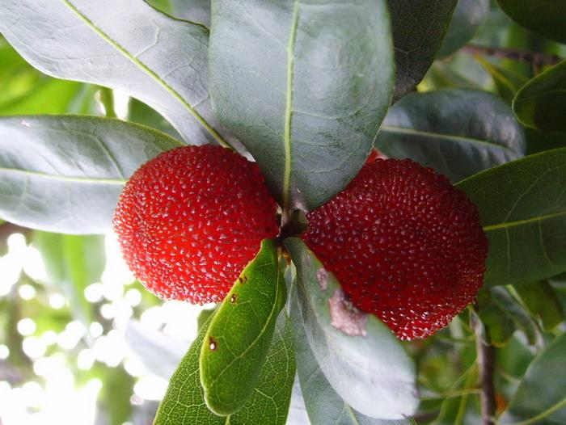
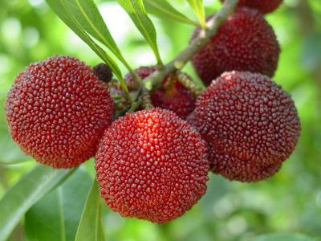

杨梅柏牡蛎蚧对杨梅树有哪些危害？杨梅柏牡蛎蚧一般在什么时候发生？如何防治杨梅卷叶蛾？以下耕种帮就作详细介绍，供网友们参考。

一、杨梅柏牡蛎蚧对杨梅有哪些危害
该虫以雌成虫和若虫固定在杨梅枝梢和叶片上吸取汁液，造成落叶、枯枝，为害严重时杨梅全株枯死犹如火烧。

二、杨梅柏牡蛎蚧发生规律
一年发生2代。第二代卵期为7月下旬至8月上旬，初孵若虫期为8月中、下旬，固定若虫期为9月上旬，10月上句若虫变为成虫，以受精雌成虫在枝干上越冬。次年4月中、下旬出现第一代卵，5月中旬第一代若虫孵化，6月中旬出现第一代成虫。

三、杨梅柏牡蛎蚧防治方法
1、冬季植株修剪以及清园，消灭在枯枝落叶杂草与表土中越冬的虫源。
2、提前预防，开春后喷施40%啶虫.毒（国光必治）乳油2000-3000倍液进行预防，杀死虫卵，减少孵化虫量
3、蚧壳虫化学防治小窍门：①抓住最佳用药时间：在若虫孵化盛期用药，此时蜡质层未形成或刚形成，对药物比较敏感,用量少、效果好; ②选择对症药剂：刺吸式口器，应选内吸性药剂，背覆厚厚蚧壳（铠甲），应选用渗透性强的药剂如40%啶虫.毒（国光必治）1500-2000倍液喷雾防治，或用国光必治1500-2000倍+5.7%甲维盐乳油（ 国光乐克）2000倍混合液防治效果更佳。建议连用2次，间隔7-10天。③选择适宜的用药方式：针对低矮容易喷施的，可以用喷雾方式防治；针对高大树体的蚧壳虫防治，也可使用吊注“必治”或者插“树体杀虫剂”插瓶的方式防治，用量根据树种、树势、气候等因素而调整。
4、生物防治：保护和利用天敌昆虫，例如：红点唇瓢虫，其成虫、幼虫均可捕食此蚧的卵、若虫、蛹和成虫；6月份后捕食率可高达78％。此外，还有寄生蝇和捕食螨等。